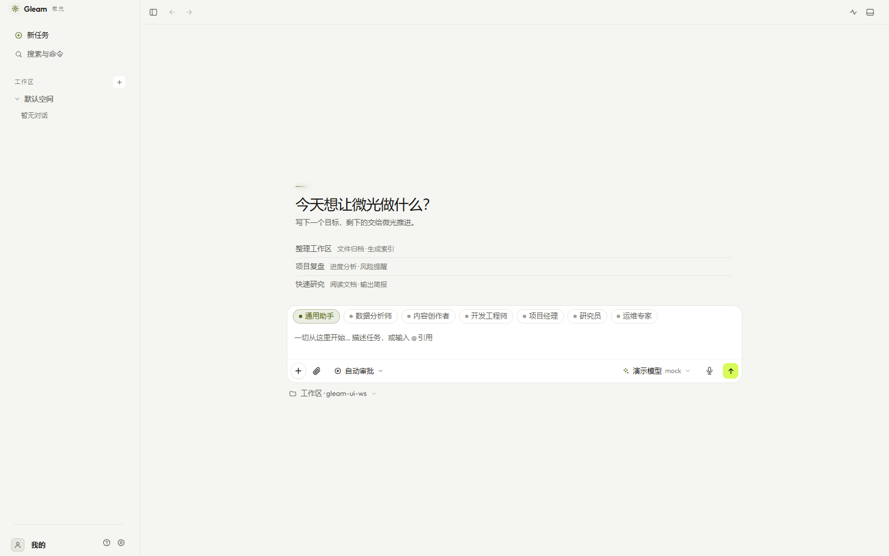
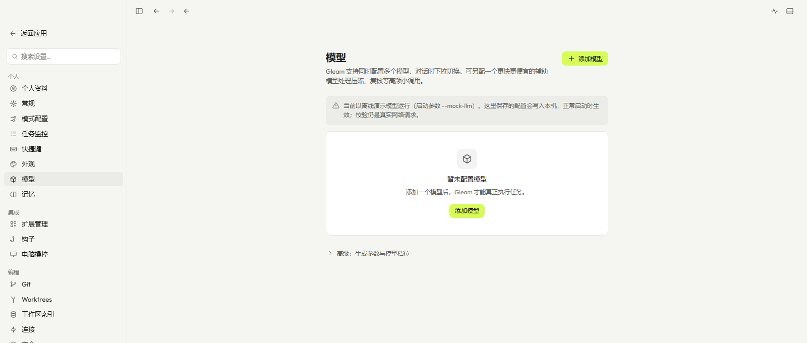
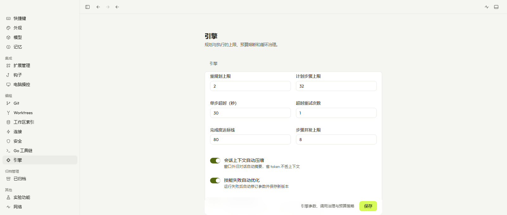

Local-first · 16 MB · Zero cloud dependency
Gleam（微光）是本地优先的 AI 助手，会规划、执行并复盘你的任务。约 16 MB 单文件，零云端依赖，数据留在本机。
它在你没看着的时候做完了整件事。
Capabilities
先把目标拆成有序的步骤，再动手。
DAG 并发推进，每个工具调用都过安全门控。
自评 0–100 分，低分自动重规划。
每个目标都跑完这个闭环——不用你记着催。
对话、记忆、任务与审计日志都留在本机。只有真实 LLM 调用才会离开——用哪家由你决定。
智谱、DeepSeek、Kimi、Qwen、OpenAI、Anthropic、OpenRouter 等。分层路由：强模型规划、快模型总结；内置 Mock 可离线体验。
文件、Shell、网页、Git、剪贴板、截图、记忆、定时任务——还可通过 MCP 扩展。
分析师、工程师、产品经理、研究员、运维、创作者——也可自定义。每个角色自带系统提示词、工具集与模型层级。
成功的任务会固化为带版本、可复用的技能，并跟踪成功率。
Interface



Get started
发布于 v0.0.36 · · MIT 许可
或从源码构建：
git clone https://github.com/gleam-ai/Gleam.git && cd Gleam
&& go build -o gleam ./cmd/gleam